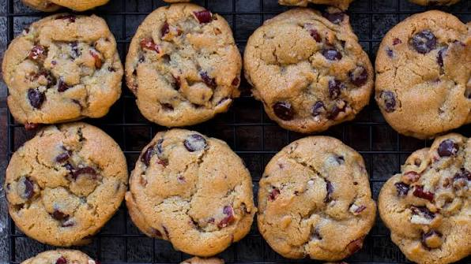

Home Quesadilla Grilled Cheese
Chocolate Chip Cookies

Description
Easy to make, roughly 30 minutes altogether. Makes 6 to 8 servings!
Ingredients
- 2 1/4 cups all-purpose flour
- 1 teaspoon baking soda
- 1 teaspoon salt
- 1 cup (2 sticks) butter, softened
- 3/4 cup granulated sugar
- 3/4 cup packed brown sugar
- 1 teaspoon vanilla extract
- 2 large eggs
- 2 cups chocolate chips
Instructions
- Preheat oven to 375 degrees.
- Combine flour, baking soda, and salt in small bowl.
- Beat butter, sugar, brown sugar, and vanilla extract in large mixer until creamy.
- Add one egg at a time, mixing well.
- Gradually beat in flour mixture.
- Stir in chocolate chips.
- Drop by rounded tablespoon onto ungreased baking sheets.
- Bake for 9 to 11 minutes or until golden brown.
- Cool on baking sheets for 2 minutes, then move to wire racks to cool completely.